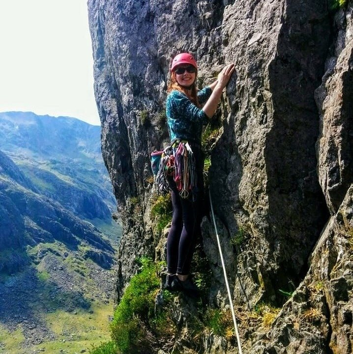

Meet the Exec
President
Mike Hall
Secretary
Kertu-Liis Oruste
Treasurer
Thomas Hocking
After enjoying a great year as Gear Officer last year, I am now acting as club treasurer, alongside working for UTC on placement. Thoroughly looking forward to another year adventuring!
Social Secretary
Lydia Richardson
Mountaineering has always been a part of my life. As a child I was marched up mountains against my will with only the promise of chocolate keeping me walking. However since joining the society in my first year I have had nothing but enthusiasm for mountaineering. As social sec it is my responsibility to ensure a happy and thriving club.
Development Officer
Tim Reeve
Gear Officer
James Mead
Alongside studying for a degree in Aerospace Engineering, I have taken an active interest in the Mountaineering society - and now as a member of the committee ensuring the safety and suitable use of the equipment we use.